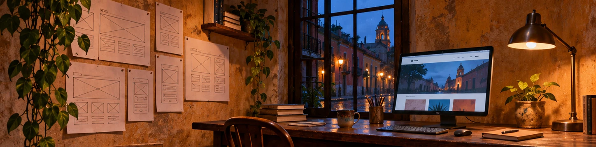
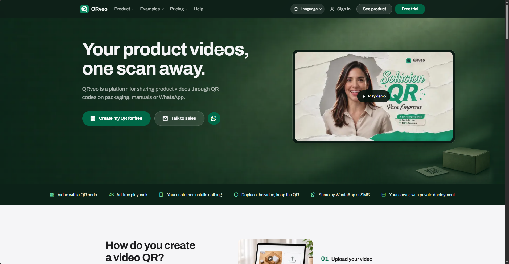

建站开发
Web development

网站实景 lwcqr.qrveo.com
AI 新媒体工坊班 · 跨境独立站实训
QRveo 墨西哥独立站
在工坊班的独立站实训中，我主导了 QRveo 墨西哥市场项目。首页用一段视频向企业客户演示，顾客如何扫描包装上的二维码观看产品使用说明。海外社媒内容和付费广告也围绕这个使用场景展开。
- 搭建与上线
- 我先梳理首页的阅读顺序和产品页要回答的问题，再以 Codex 为主要开发工具，分步搭建页面。每完成一页，我就在浏览器里核对首屏布局、文案和链接，确认访客能从产品介绍顺利进入演示，再发布上线。
- 上线后优化
- 我用 Google Search Console（GSC）查看哪些页面已被收录、用户通过哪些搜索词看到网站，再用 Semrush 研究相关关键词，用 AITDK 核对页面标题和描述，据此调整产品文案与站内链接。
- 实践收获
- 我学会了把「让客户看懂产品」拆成可以逐页验收的要求，也学会用真实搜索词检验自己的表达。当客户的用词与网站文案有出入时，我能据此判断哪一页值得先改、该讲清哪个问题。
课程实训 · 独立开发
校企招聘与就业管理平台
我把企业发岗、学生投递和就业统计接进同一个全栈系统，按角色设计权限、核心数据表、接口和管理页面。
- 核心数据表
- 10+
- 核心接口
- 5+
企业发岗学生投递就业统计